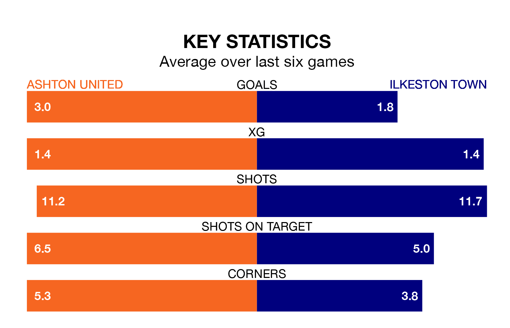

Ashton United host Ilkeston Town at Hurst Cross on Saturday on the back of six consecutive wins in the Northern Premier League.
It means Ashton have picked up the maximum 18 points from their last six games, and they face an Ilkeston side who have also won their last two matches, and collected 11 points from the last possible 18.
With 67 goals in 36 games so far this season, Ashton are scoring more than average in the league with 1.9 goals per game. And they are conceding fewer than average, letting in 53 goals at a rate of 1.5 per game.
Ilkeston are also above average scorers, with 1.7 goals per game, compared to a league average of 1.6. They have conceded 1.5 goals per game.
United are seventh in the table after 36 games, of which they have won 18 and drawn 10, earning 64 points.
Town are two places behind the hosts in ninth, with 17 wins and six draws putting them on 57 points.
Ashton's last match was on April 6, a 3-1 win against Bamber Bridge.
Ilkeston beat Atherton Collieries 3-0 last time out, also on April 6.
Updated: 10:01 (UTC), 12/04/24